PART 2: TRAINING
14.11 Procedural Lab
This lab walks you through the step-by-step actions that you must follow to properly compound a pediatric dilution. As with most sterile compounding procedures, there are several ways to aseptically prepare a pediatric dilution. The Chapter 14 Procedural Lab presents one possible scenario for pediatric dilution preparation and offers you the opportunity to practice using an EEC vial. Take your time. Work through each step methodically and with close attention to detail.
Note: For the purposes of this procedural lab, you will not perform handwashing and PEC cleaning and disinfection procedures unless directed to do so by your instructor. Should your instructor ask you to perform these procedures, refer to Chapter 8 for instructions on handwashing and to Chapter 9 for procedures on cleaning and disinfection of the PEC.
Essential Supplies
To complete the Unit 2 procedural labs, you will need to ensure that various essential anteroom and buffer room supplies such as those listed in Table 14.2 are available for your use. If you are using a PEC other than a LAFW, you will need to alter some procedures to account for the type of PEC and the direction of airflow coming from the HEPA filter. In this case, refer to instructor direction or facility SOPs for specific instructions regarding this procedural lab.
Procedure-Specific Supplies
In addition to the supplies listed in Table 14.2, gather the following items specific to the Chapter 14 Procedural Lab:
- PF pediatric gentamicin, 10 mg/mL vial
- PF 0.9% sodium chloride (NS), 10 mL vial
- EEC, 10 mL vial
- 10 mL Luer-lock syringe
- 3 mL Luer-lock syringe × 2
- regular needle × 3
- sterile syringe cap
- tamper-evident, sterile, adhesive seals
- labels for pediatric dilution (PF gentamicin 2 mg/mL standard concentration) and finished preparation.
| Anteroom Supplies |
|---|
|
| Note: As mentioned earlier, the Chapter 14 Procedural Lab does not include steps for performing hand hygiene procedures. If your instructor directs you to perform hand hygiene as part of the Chapter 14 Procedural Lab, you will need access to a sink and hand hygiene supplies. Refer to Chapter 8 for details on hand hygiene procedures. Remember that, in practice, you must perform hand hygiene procedures prior to preparing a CSP in a sterile compounding area. |
| Buffer Room Supplies |
|
| Note: As mentioned earlier, the Chapter 14 Procedural Lab does not include steps for cleaning and disinfecting the PEC. If your instructor directs you to do this process as part of the Chapter 14 Procedural Lab, you will need access to PEC cleaning and disinfection supplies. Refer to Chapter 9 for details on PEC cleaning and disinfection procedures. Remember that, in practice, you must clean and disinfect the PEC prior to preparing a CSP. |
Procedure
Take a careful, deliberate approach to each step of this lab. In practice, using this approach helps to ensure an appropriate environment for sterile compounding. Refer to instructor directions or facility SOPs to determine whether goggles are required for the procedure and whether sterile gloves should be donned in the anteroom or buffer room.
Note: For steps 1 and 2 that follow, please refer to Chapter 6 for the procedures required for medication order and CSP label verification. For steps 3–7, refer to Chapter 7 for pharmacy calculation procedures. For steps 8–11, refer to Chapter 5 for gathering and staging supplies. For steps 12–23, refer to Chapter 8 for hand hygiene and garbing procedures. For the purposes of this lab, steps 1–20 and steps 63–65 should be performed in the anteroom. Steps 21–62 should be performed in the buffer room.
Verifying the Labels
- Review the pediatric standard concentration label (see Figure 14.7) to verify all information, including the correct standard concentration for PF gentamicin.
View long description Hide description
The label reads as follows: pediatric standard concentration, Mercy Medical Center. P F Gentamicin, Standard Concentration: 2 milligrams per milliliter. For IV administration only. Batch microdilution for syringe preparation. Do not dispense vial to patient. Gentamicin standard concentration: 2 milligrams per milliliter. Pharmacy Lot number: PEDIGENT092023. This is a compounded preparation. At bottom: B U D, tech, and R P h.
FIGURE 14.7 Pediatric Standard Concentration Label for PF Gentamicin PF gentamicin is an antibiotic used to treat pediatric patients who have serious infections, such as sepsis, meningitis, respiratory tract infection, urinary tract infection, or peritonitis. © Paradigm Education Solutions - Review the patient-specific CSP label (see Figure 14.8) to verify that all of the information on the label matches the medication order (see Figure 14.9).
View long description Hide description
The label reads as follows: pediatric patient, Mercy Medical Center, patient name, room, I D number, and R X number. Gentamicin PEDI Syringe 2.8 milligrams (1.4 milliliters). Given IV every 24 hour. Infuse over 30 minute via syringe pump. Gentamicin standard concentration: 2 milligrams per milliliter. This is a compounded preparation. At bottom: B U D, tech, and R P h.
FIGURE 14.8 Patient-Specific CSP Label for a Filled Syringe of Standard Concentration PF Gentamicin A patient-specific filled syringe is placed in a syringe pump for the delivery of precise fluid volumes at preset intervals. © Paradigm Education Solutions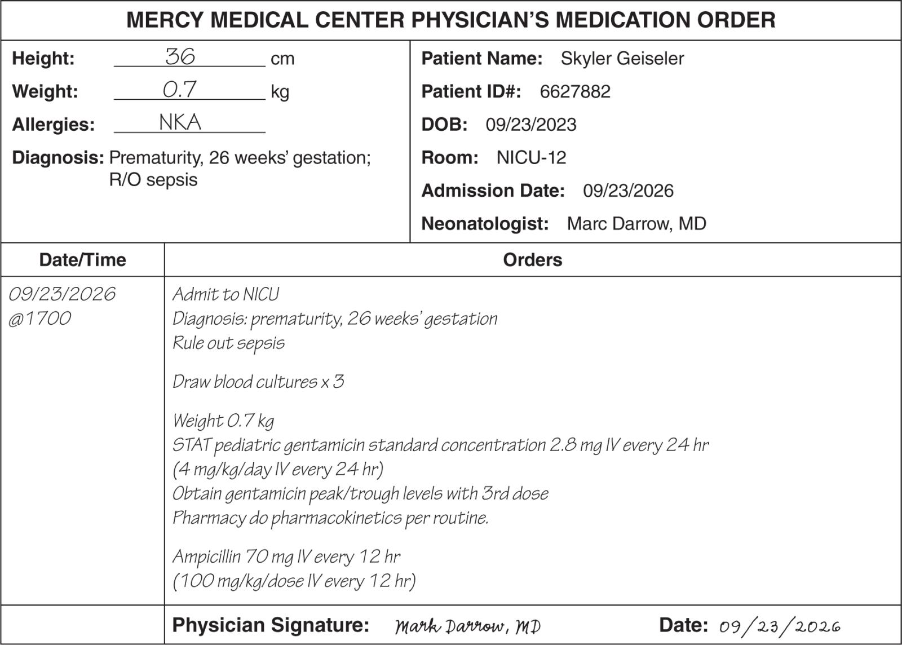
FIGURE 14.9 Medication Order A medication order for a neonate must include the patient’s current weight in kilograms. The neonate’s weight is typically updated daily by nursing personnel, and dosing is adjusted as necessary. © Paradigm Education Solutions


Calculating the Amount (in Milligrams) of PF Gentamicin
- Note the standard concentration on the pediatric dilution label for PF gentamicin: 2 mg/mL (see Figure 14.7). Then refer to your facility’s SOPs for compounding PF gentamicin 2 mg/mL with a total volume (TV) of 10 mL (see Table 14.3).
TABLE 14.3 Mercy Medical Center Neonatal ICU (NICU) Standard Concentration Procedure Mercy Medical Center
NICU Standard Concentration Procedure
PF Gentamicin 2 mg/mL, Total Volume (TV) 10 mLCommercially Available Stock Medications and Vial Size Amount of Stock Medication (mL) Type of Diluent Amount of Diluent (mL) Final Concentration (mg/mL) BUD (Refrigerated) BUD (Room Temperature) PF gentamicin (10 mg/1 mL) PF normal saline (PF NS) 8 mL 2 mg/mL 10 days 4 days - Draw up 2 mL (20 mg) of the stock medication—in this case, PF gentamicin—from a 10 mg/1 mL vial.
- Add 8 mL of PF NS to yield a PF gentamicin concentration of 2 mg/mL.
- Draw up individual patient doses into separate syringes from the standard concentration of PF gentamicin 2 mg/mL dilution.
- Using the information from the procedure for compounding PF gentamicin 2 mg/mL, perform a calculation to determine the number of milligrams of PF gentamicin needed to prepare this pediatric dilution.
\(\frac{2\text{ }\!\!~\!\!\,\text{ mg}}{1\text{ }\!\!~\!\!\,\text{ mL}}=\frac{x\text{ }\!\!~\!\!\,\text{ mg}}{10~\,\text{mL}}\)
Cross-multiply and then divide to solve for x (the desired volume [in milligrams] of PF gentamicin).
\(\begin{array}{l}
x & = & \frac{10\text{ }\!\!~\!\!\,\text{ mL }\!\!~\!\!\text{ }\times \text{ }\!\!~\!\!\text{ }2\text{ }\!\!~\!\!\,\text{ mg}}{1\text{ }\!\!~\!\,\!\text{ mL}} \\
{} & {} & {} \\
x & = & 20\text{ }\!\!~\!\!\text{ }\mathbf{mg}\text{ }\!\!~\!\!\text{ }\,\mathbf{of}\text{ }\!\!~\!\!\text{ }\,\mathbf{PF}\text{ }\!\!~\!\!\text{ }\,\mathbf{gentamicin} \\
\end{array}\)
Calculating the Volume (in Milliliters) of PF Gentamicin
-
Read the medication label for pediatric PF gentamicin to determine the drug concentration (see Figure 14.10). Assuming the medication label indicates the concentration of PF gentamicin is 10 mg/mL, perform a calculation to determine the amount (in milliliters) of PF gentamicin needed to prepare the pediatric dilution. (Use the answer from step 4 in your calculation here.)
\(\frac{10\text{ }\!\!~\!\!\,\text{ mg}}{1\text{ }\!\!~\!\!\,\text{ mL}}=\frac{20\text{ }\!\!~\!\!\,\text{ mg}}{x~\,\text{mL}}\)
Cross-multiply and then divide to solve for x (the desired volume [in milliliters] of PF gentamicin).
\(\begin{array}{l}
x & = & \frac{20\text{ }\!\!~\!\!\,\text{ mg }\!\!~\!\!\text{ }\times \text{ }\!\!~\!\!\text{ }1\text{ }\!\!~\!\!\,\text{ mL}}{10\text{ }\!\!~\!\!\,\text{ mg}} \\
{} & {} & {} \\
x & = & 2\text{ }\!\!~\!\!\text{ }\mathbf{m}\text{L }\!\!~\!\!\text{ }\,\mathbf{of}\text{ }\!\!~\!\!\text{ }\,\mathbf{PF}\text{ }\!\!~\!\!\text{ }\,\mathbf{gentamicin} \\
\end{array}\)

View long description Hide description
The label reads as follows: Gentamicin for injection U S P (pediatric: equivalent 10 milligrams per 2 milliliters Gentamicin), 20 milligrams per 2 milliliters for IM or IV use. Must be diluted for IV use, 2 milliliters single-dose vial Preservative-Free (PF).
Calculating the Desired PF NS Volume
- Read the diluent label to verify that the diluent is PF NS (see Figure 14.11). Refer to the neonatal standard concentration information in Table 14.3 to find the standard concentration that the facility follows. Then perform a calculation to determine the volume of PF NS that you must draw up to make the pediatric dilution. To do so, use the following formula:
total volume (TV) − concentrate/stock medication = volume of PF NS (diluent)
10 mL − 2 mL = x
x = 8 mL (volume of PF NS)
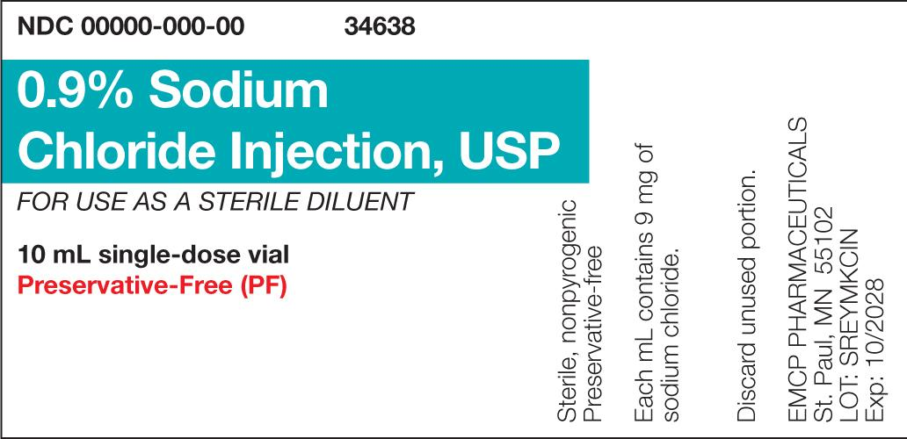
FIGURE 14.11 Medication Label for PF NS The vial label indicates that the NS solution is preservative-free. Consequently, this NS vial is a single-dose container and should be discarded after use. © Paradigm Education Solutions - Complete the PEDI dilution label for the gentamicin 2 mg/mL EEC vial by recording the volumes for PF gentamicin and PF NS diluent, the total volume, the initials of pharmacy personnel involved in the compounding and verification process, and the BUD for the CSP (see Figure 14.12).
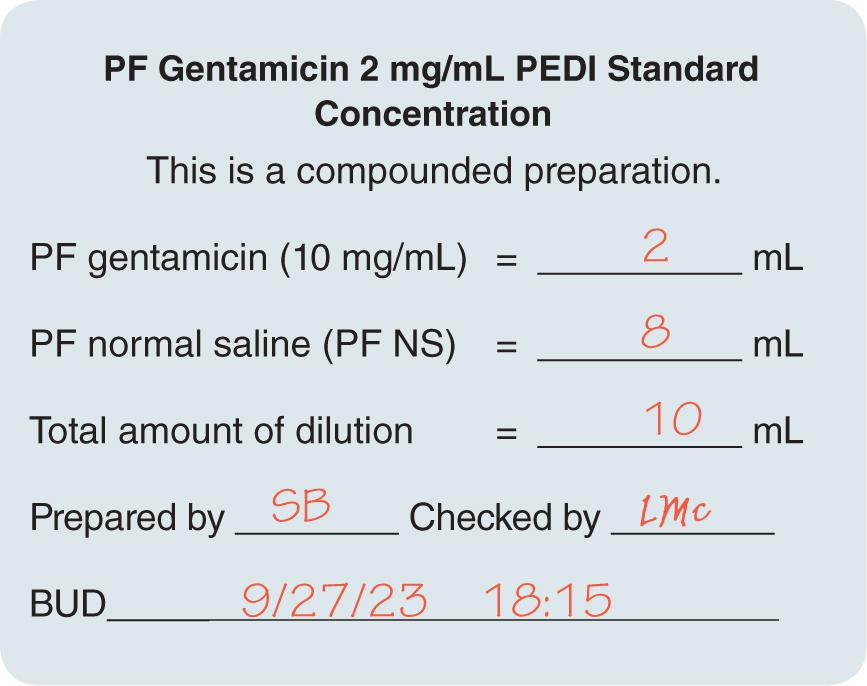
FIGURE 14.12 Label for Pediatric Standard Concentration Vial The label indicates the ingredients and amounts for the preparation of the pediatric standard concentration, who prepared and checked the standard concentration, and the BUD, or the date and time by which the standard concentration must be used (four days after preparation). © Paradigm Education Solutions
Gathering and Staging Supplies
- Place the medication order into a large plastic bag. Then place the pediatric standard concentration label and the patient-specific CSP label into separate, small plastic bags. Gather all supply items listed in the supplies section of the procedural lab.
- Using one or more low-lint wipers presaturated with sterile 70% IPA, thoroughly wipe down the entire transport vehicle. Then discard the used wiper(s) into the waste container.
- Before crossing into the clean side of the anteroom, use a new, low-lint wiper presaturated with sterile 70% IPA to wipe the surface of each supply item. Then place the supply item on the transport vehicle.
- Discard the used wipers into the waste container.
Garbing
- Don shoe covers while stepping over the line of demarcation into the clean side of the anteroom.
- Don a head cover.
- Don a face mask.
- Don a facial hair cover (if needed).
- Don goggles for eye protection (if needed).
Note: For the purpose of this training lab, you will skip handwashing, unless told otherwise by your instructor.
- Don a gown.
- Apply an alcohol-based hand rub to all surfaces of your hands and allow your hands to dry thoroughly.
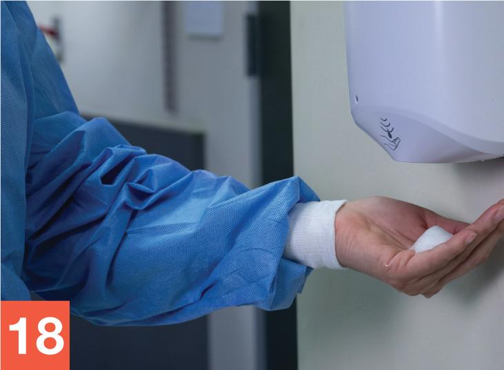
George Brainard/© Paradigm Education Solutions - Don sterile gloves.
- Apply sterile 70% IPA to all surfaces of your gloves and allow your gloved hands to dry thoroughly.
- Use a transport vehicle to bring all supply items into the buffer room.
- Place the transport vehicle onto a table or cart within the buffer room. If a cart is used, position it so that it does not interrupt airflow into the PEC’s prefilter.
- Apply sterile 70% IPA to all surfaces of your gloves and allow your gloved hands to dry thoroughly.
Note: For the purposes of this training lab, you will skip cleaning and disinfecting the PEC, unless told otherwise by your instructor.
Withdrawing from the PF Gentamicin Vial
- Place all of the supply items needed for the procedure in the outer six-inch zone of the PEC.
- Wipe your gloves with sterile 70% IPA and allow your gloved hands to dry. Then move the PF gentamicin vial into the DCA so that it receives uninterrupted airflow from the PEC’s HEPA filter. Remove the flip-top cap and place it into the start of a discard pile.
- Open a sterile 70% IPA swab within the DCA, remove the swab, and wipe the vial stopper of the PF gentamicin. Place the used swab onto the PEC’s work surface within the DCA. Place the swab’s wrapper into the discard pile.
- Prepare a 3 mL syringe by aseptically attaching a capped regular needle. Pull down on the flat knob of the plunger to draw a volume of air into the syringe equal to or slightly less than the volume you wish to withdraw from the vial—in this case, 2 mL. Grasp the barrel of the syringe as you would a dart. Remove the needle cap and place it onto the IPA swab on the PEC’s work surface.
- Using the thumb and forefinger of your one hand, stabilize the PF gentamicin vial against the PEC’s work surface. With your other hand, place the needle tip, bevel up, onto the vial stopper of the PF gentamicin vial. Use proper needle insertion technique to insert the needle into the vial.
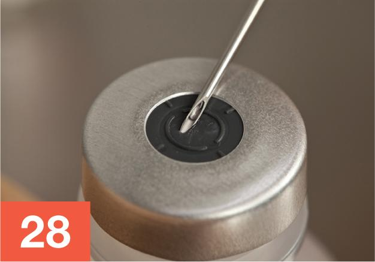
George Brainard/© Paradigm Education Solutions - With one hand holding the vial and your other hand maintaining the needle in the vial, invert the vial using a clockwise motion (a counterclockwise motion if you are left-handed), so that the needle-and-syringe unit is now below the vial.
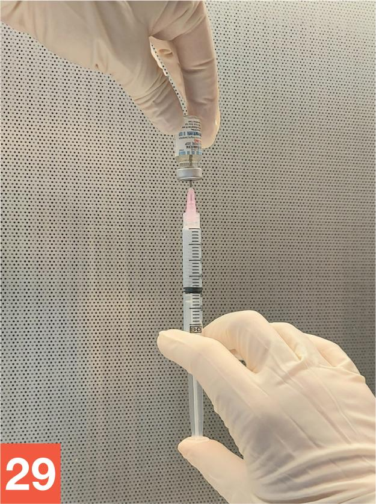
Source: Lisa McCartney - Use your thumb to gradually push up on the flat knob of the plunger to inject a small amount of air (approximately 1 mL) into the PF gentamicin vial, creating a slight positive pressure within the vial. Release your thumb from the plunger and allow fluid to flow into the syringe. Repeat this milking process until you have withdrawn the desired volume of PF gentamicin into the syringe (in this case, 2 mL).
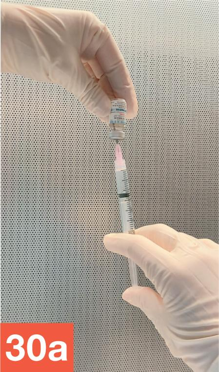
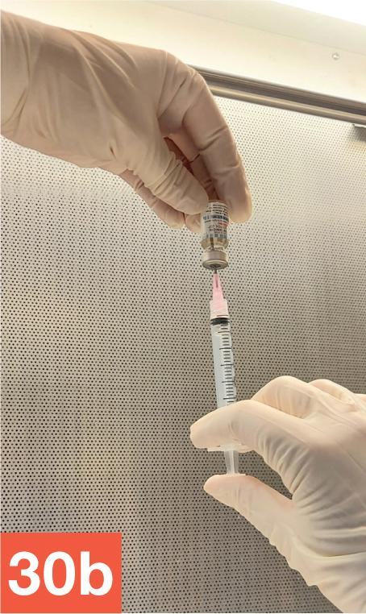
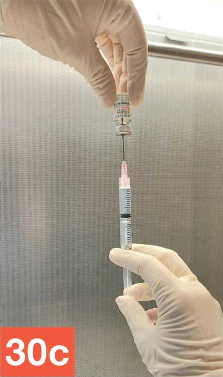
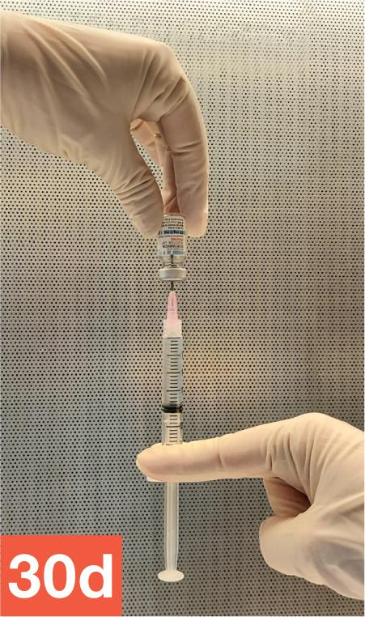
Source: Lisa McCartney - While ensuring the needle remains entirely within the PF gentamicin vial, brace the vial—with needle and attached syringe inserted completely—between your thumb and forefinger, allowing the barrel of the syringe to rest against the palm of that hand. Tap the barrel of the syringe with your fingers to force air bubbles within the fluid up toward the tip of the syringe.
-
With your hand on the barrel of the syringe, pull down on the needle-and-syringe unit to partially withdraw the needle so you ensure that the needle tip is in the fluid. Push up on the flat knob of the plunger with your thumb to expel the air bubbles gathered near the tip of the syringe, along with any extra fluid.
-
Verify that the syringe now contains the desired amount of PF gentamicin (in this case, 2 mL).
-
While keeping the needle firmly inserted in the vial, use a counterclockwise rotation (a clockwise rotation if you are left-handed) to return the vial and syringe to the starting position, with the upright vial braced against the PEC’s work surface and your hand holding the syringe barrel. Continue to brace the vial with one hand, and use your other hand to slowly remove the needle-and-syringe unit from the medication vial. Remember to avoid touching the plunger or flat knob of the syringe at any time while removing it from the vial.
-
Carefully recap the needle and place the capped needle-and-syringe unit, now filled with PF gentamicin, in the DCA of the PEC. Place the used PF gentamicin vial next to the filled PF gentamicin syringe.
Withdrawing from the PF NS Diluent Vial
- Repeat steps 25–35 to draw up the correct amount of PF NS in the 10 mL syringe.
- Arrange the diluent-filled syringe with attached, capped needle and the PF NS vial on the PEC’s work surface within the DCA. Position them adjacent to the capped PF gentamicin syringe and used PF gentamicin vial. Ask for a verification check by your instructor or a pharmacist.
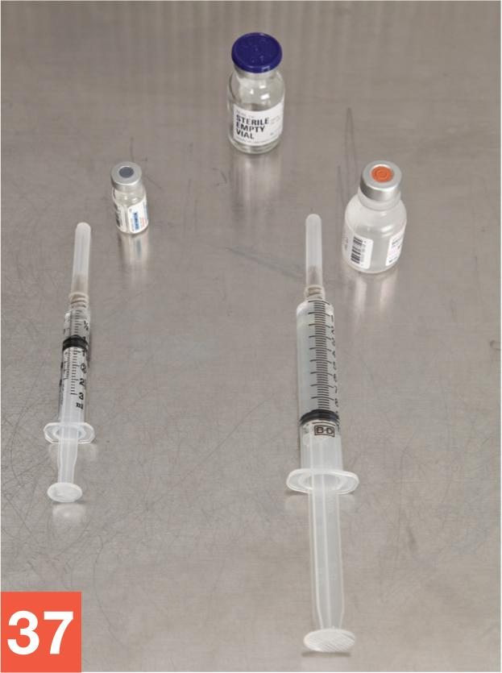
George Brainard/© Paradigm Education Solutions
Preparing the CSP
- Once the verification check has been completed, wipe your gloves with sterile 70% IPA and allow your gloved hands to dry. Then arrange the filled needle-and-syringe units within the DCA so that they receive uninterrupted airflow from the PEC’s HEPA filter.
- Remove the flip-top cap from the EEC vial, and set the vial into the DCA so that it receives uninterrupted airflow from the PEC’s HEPA filter. Place the cap into the discard pile.
- Open a sterile 70% IPA swab , remove the swab, and wipe the vial stopper of the EEC vial. Place the used swab onto the PEC’s work surface within the DCA.
- Grasp the barrel of the PF gentamicin syringe with your hand, as you would a dart. Remove the needle cap, and then place it onto the IPA swab.
- Stabilize the EEC vial against the PEC’s work surface with your hand. Use proper needle insertion technique to insert the needle into the EEC vial.
- Gently push down on the flat knob of the plunger with your thumb to inject the PF gentamicin into the EEC vial.
- Grasping only the barrel of the syringe, use proper technique to remove the needle-and-syringe unit from the EEC vial. Carefully recap the needle and place the needle-and-syringe unit into the discard pile, taking caution to separate your discarded sharps waste from the discard pile containing non-sharps waste.
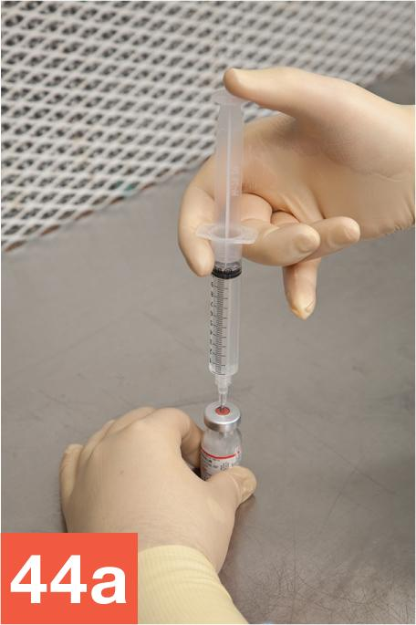
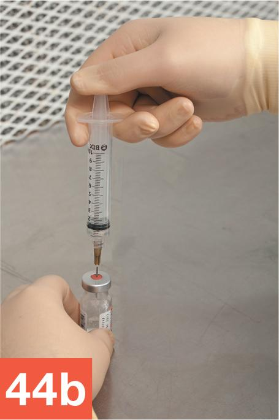
George Brainard/© Paradigm Education Solutions - Wipe sterile gloves with sterile 70% IPA and allow to dry thoroughly. Repeat steps 40–44 using the diluent syringe.
WORKPLACE WISDOM
Sterile compounding personnel should be aware that certain procedures dictate the use of either the milking technique or the upside-down milking technique. The milking technique is used to withdraw or “draw up” fluid from a vial. For example, in the Chapter 14 Procedural Lab, sterile compounding personnel would use the milking technique when drawing up the PF NS diluent into a syringe. In this situation, the PF NS vial is inverted, with the needle-and-syringe unit below the vial. Fluid is then drawn from the vial into the syringe.
Personnel would use the upside-down milking technique to inject fluid into a vial. In this situation, the vial remains below the needle-and-syringe unit, and the needle tip must remain in the air pocket at the neck of the vial. Liquid is gradually added to the vial while the air pressure is relieved back into the syringe. In the Chapter 14 Procedural Lab, sterile compounding personnel would use the upside-down milking technique to inject the PF gentamicin and the PF NS diluent into the EEC vial.
Drawing Up a Patient Dose from a Pediatric Dilution
- Open a sterile 70% IPA swab within the DCA of the PEC, remove the swab, and place the wrapper in the discard pile. Wipe the top of the EEC vial containing the PF gentamicin dilution, and place the swab within the DCA.
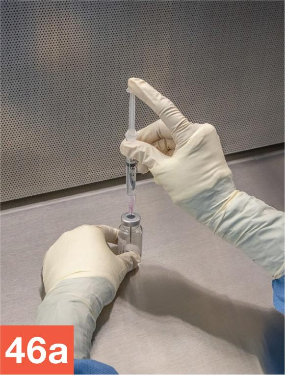
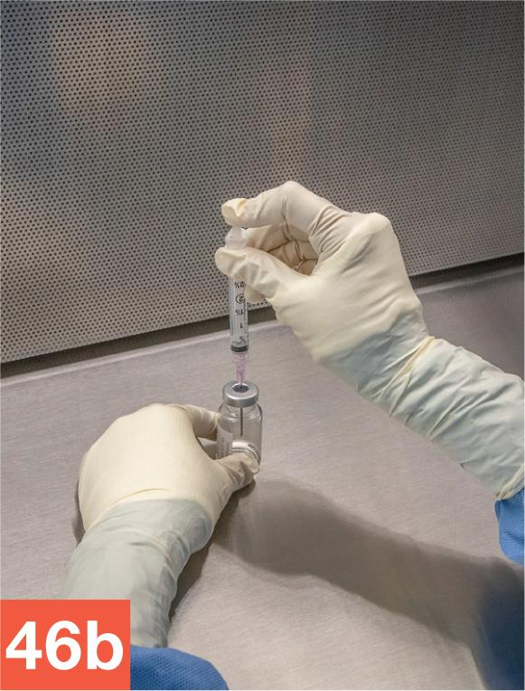
George Brainard/© Paradigm Education Solutions - Read the patient-specific CSP label to confirm the volume for the prescribed dose. Select the appropriate syringe size for the 1.4 mL volume—in this case, a 3 mL syringe.
- Prepare a 3 mL syringe by removing a capped regular needle from its wrapper. Place the wrapper in the discard pile. Aseptically attach the capped regular needle to the syringe. Grasp the barrel of the syringe, as you would a dart. Remove the needle cap, and place it onto the IPA swab you placed in the DCA.
- Use your thumb and forefinger to stabilize the EEC vial containing the PF gentamicin dilution against the PEC’s work surface. Then place the needle tip, bevel up, onto the vial stopper of the EEC container. Use proper needle insertion technique to insert the needle into the vial.
- With your one hand holding the vial and your other hand maintaining the needle-and-syringe unit in the vial, invert the vial using a clockwise motion (a counterclockwise motion if you are left-handed), so that the needle-and-syringe unit is now below the EEC vial.
- Continue to hold the vial with your thumb and forefinger. While holding the barrel of the syringe so that the needle tip remains in the fluid within the vial, pull down on the flat knob of the plunger until approximately 1.5 mL of fluid has been drawn into the syringe.
- While ensuring the needle remains entirely within the vial, hold the vial between your thumb and forefinger. Be sure to position your hand in a manner that continues to allow airflow to the critical sites, which include the area where the needle-and-syringe unit connects to the vial stopper as well as the syringe plunger. Then, using your other hand, tap the barrel of the syringe with your fingers to force air bubbles within the fluid up toward the tip of the syringe. Watch that the position of your hand does not obstruct airflow from the PEC’s HEPA filter.
- Expel the air bubbles that have gathered near the tip of the syringe.
- Verify that the syringe now contains the desired patient dose volume of 1.4 mL.
- While keeping the needle-and-syringe unit firmly inserted in the vial, use a counterclockwise rotation (a clockwise rotation if you are left-handed) to return the vial and needle-and-syringe unit to the original starting position, with your one hand bracing the vial against the PEC’s work surface and your other hand grasping the barrel of the syringe. Carefully remove the needle-and-syringe unit from the vial.
- Carefully recap the needle of the filled syringe, and temporarily place it on the work surface in an area that receives uninterrupted airflow from the PEC’s HEPA filter.
- Grasp the exterior of the sterile cap package by holding the package with your hand within the DCA and peeling back the protective wrapper covering the cap with your other hand. Make sure that the critical site of the exposed sterile cap receives uninterrupted airflow from the PEC’s HEPA filter.
- Pick up the capped needle-and-syringe unit from the PEC’s work surface. Grasp the barrel of the syringe, holding it as you would a dart. Remove the capped needle and place it in the discard pile. While carefully holding the sterile cap container, press the syringe tip into the female adapter end of the sterile cap. Do not force the cap or tap the syringe or cap on the PEC’s work surface. These actions may damage the Luer connector of the syringe, thereby introducing unwanted air into the syringe.
- Remove the patient-specific CSP syringe label from the plastic bag. Partially fold the label, leaving the two ends free to attach to the syringe in a “flagging” fashion. Affix the two ends of the label to the syringe, ensuring both ends of the label make contact with the syringe.
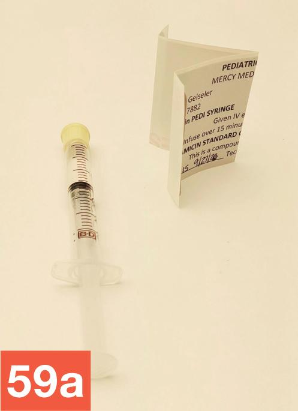
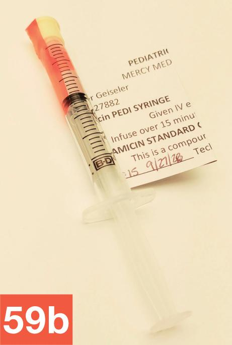
Source: Lisa McCartney - Place a tamper-evident, sterile, adhesive seal over the port of the EEC vial that contains the residual pediatric standard concentration. Temporarily place the vial on the PEC’s work surface.
- Affix a tamper-evident, sterile, adhesive seal over the top of the syringe cap. Place the filled, capped, and labeled syringe into a small plastic bag.
Cleaning Up after the Procedure
- Dispose of the waste from the discard pile into the regular waste container. Place the labeled EEC vial, labeled patient-specific syringe, and any remaining supply items into the transport vehicle.
- Return to the anteroom to begin the compounding completion procedures. Record the BUD and your initials in the proper locations on the CSP label. Then return any unused supply items to their proper storage locations. Finally, remove your garb according to the procedures outlined in Chapter 8.
- Ask for a final verification check by your instructor or a pharmacist.
- Await a directive from your instructor regarding the completed CSP. In practice, you would follow your facility’s protocol and either place the CSP in the proper storage location (refrigerator, shelf, etc.) or deliver the CSP for administration to the patient.